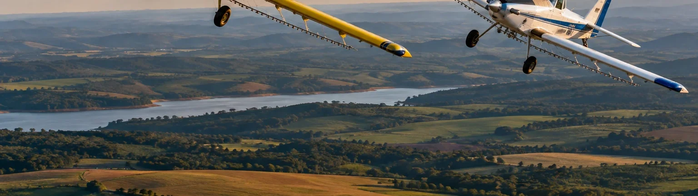
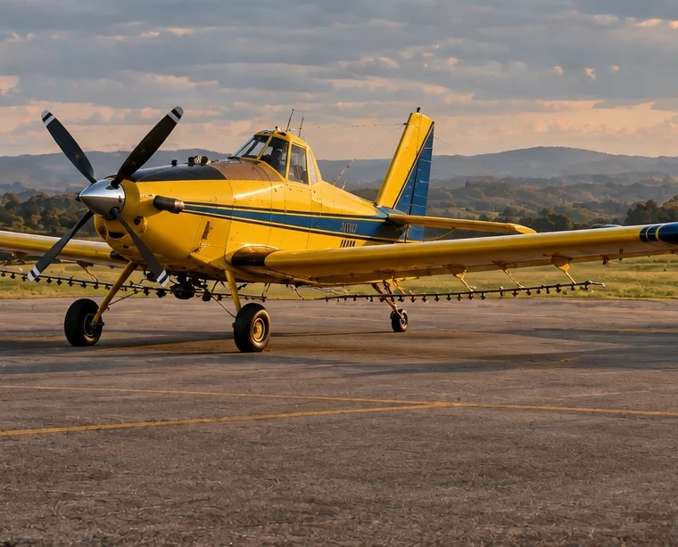
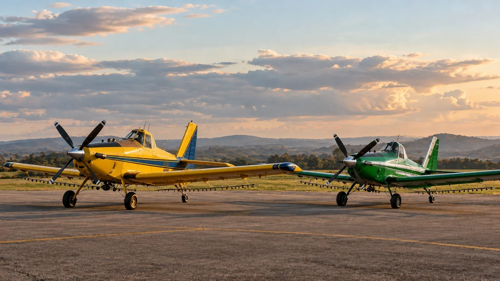
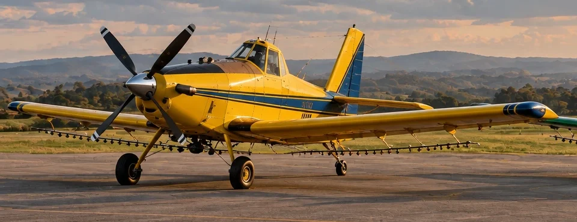
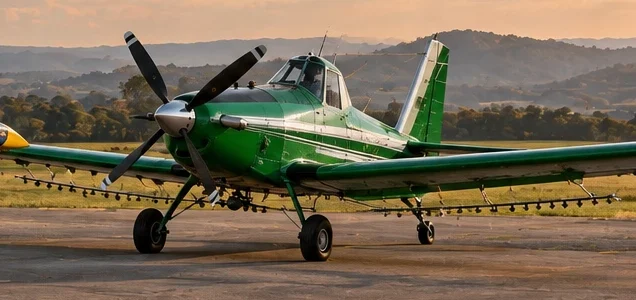
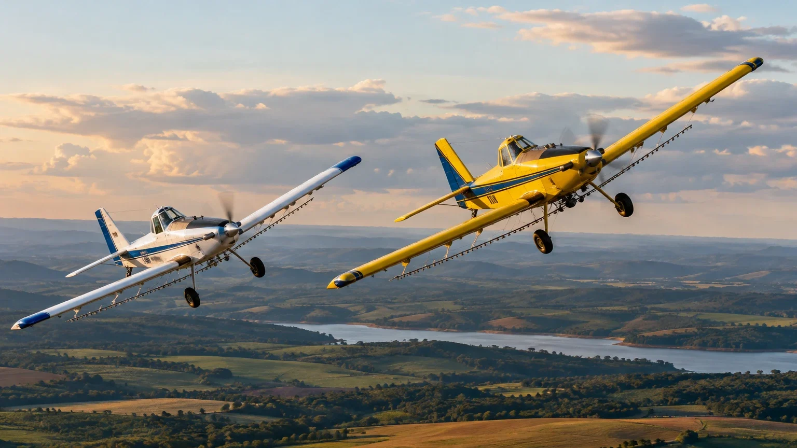

01Defensivos
Pulverização de defensivos
Fungicidas, inseticidas e herbicidas com gota calibrada e controle de deriva.
Aplicação aérea de defensivos, sementes e fertilizantes para quem produz em grande escala no Mato Grosso.
250 mil+ hectares atendidos
Nosso jeito de voar
Cada voo começa no chão: no mapa da área, na previsão do tempo e na escolha da gota certa. Quando a aeronave decola, o resultado já foi planejado.

Cobertura uniforme.
Mais área em menos tempo.
Serviços
Entramos na janela certa, sem amassar a cultura e sem depender do solo. Cada voo é planejado conforme produto, clima e alvo.
Pedir orçamentoFungicidas, inseticidas e herbicidas com gota calibrada e controle de deriva.
Plantas de cobertura como braquiária e milheto, distribuídas com a cultura ainda em pé.
Fertilizantes sólidos e foliares aplicados com agilidade nas janelas mais curtas.
Produtos biológicos, dessecantes e maturadores com rastreabilidade completa.
Apoio rápido no combate a focos em áreas rurais e de preservação.
Como funciona
Você informa a área e a cultura. A gente cuida do resto e entrega a prova do que foi feito.
Recebemos o mapa da propriedade, a cultura, os hectares e o produto a aplicar.
Definimos faixa, altura, tamanho de gota e a janela de clima com menor risco de deriva.
Voo guiado por DGPS, com monitoramento de vento, temperatura e umidade durante toda a operação.
Você recebe o mapa georreferenciado com cada faixa aplicada, pronto para o seu controle.

Sobre nós
A Sorriso Aviação Agrícola leva ao produtor uma aplicação aérea eficiente, segura e responsável. Planejamos cada voo com base na cultura, no clima e no produto, para entregar o melhor resultado com o menor desperdício.

Frota pronta
para a sua safra.
Frota
Manutenção em dia, barras de pulverização calibradas e equipamentos de navegação em todas as aeronaves.

Turbo-hélice
Robusto e veloz, ideal para grandes áreas. Alta capacidade de carga e rendimento operacional.

Fabricação nacional
O avião agrícola brasileiro: ágil em áreas menores, movido a etanol e econômico.

Abastecimento, mistura de calda e manutenção na base, para a aeronave voltar ao ar rápido.
Agendar um vooContato
Fale com a equipe e agende o voo na sua propriedade.